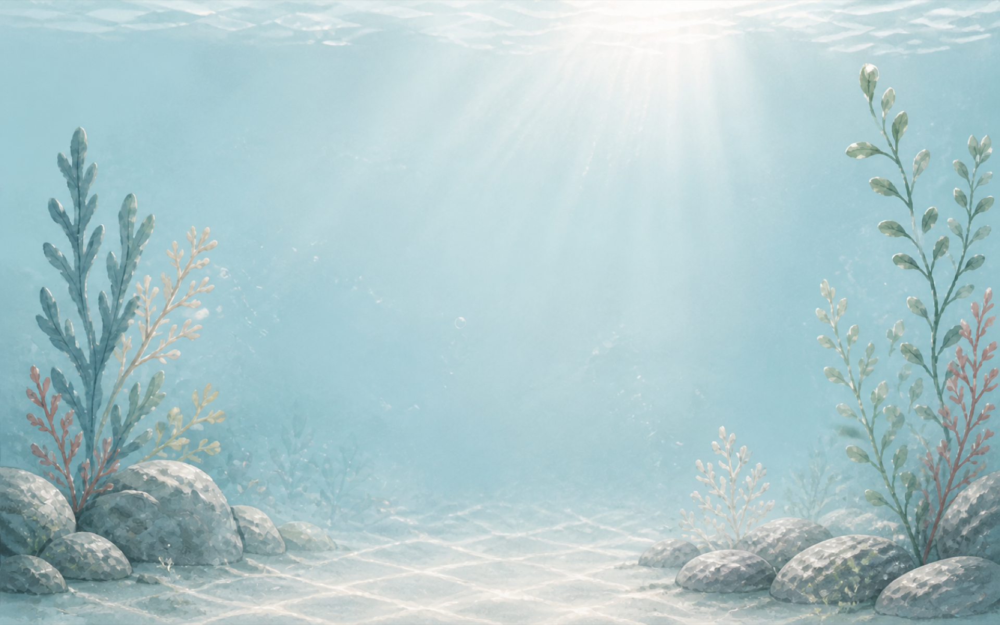

01 / THE LAKE
誰かの気配がほしい日は
湖で、ひとこと。
今、この画面を開いている仲間が魚になって泳ぎます。「こんにちは」から始まる定型メッセージで、気負わず交流。見るだけの日があっても大丈夫。
リアルタイムの気配 / 定型リアクションA PLACE TO FIND YOUR PEOPLE
好きなことも、まだ迷っていることも。
同じ理工系を歩む誰かと、
あなたのペースで話せる場所。
匿名で参加 · 学校名・公開ユーザー名は不要
SCROLL TO EXPLORE
魚やボトルに、触れてみて。
NOT ALONE, NOT IN A HURRY.
授業の小さな疑問、研究の行き詰まり、
進路を決める前に聞いておきたいこと。
身近に話せる人がいないとき、
ここには、違う場所で同じ道を歩む仲間がいます。
THREE WAYS TO CONNECT
誰かの気配がほしい日は
今、この画面を開いている仲間が魚になって泳ぎます。「こんにちは」から始まる定型メッセージで、気負わず交流。見るだけの日があっても大丈夫。
リアルタイムの気配 / 定型リアクション聞いてみたいことがある日は
相談や質問、見つけたイベントの情報をボトルに残す。返事はあとから届くので、時間を合わせなくても会話が続きます。
検索・返信 / リンク添付 / あとで読む誰かの経験が、
次の一歩のしおりになる。
経験を、誰かのヒントにしたい日は
インターンの体験、技術の学び、つくったアプリ。少し長い話は湖畔のノートへ。誰かの試行錯誤が、あなたの次の一歩につながります。
4種類のノート / 本棚 / しおり保存A LITTLE DISTANCE, A LITTLE COMFORT.
近づくことだけが、つながりではないから。
固定の公開名や学校名は表示しません。プロフィールは学びや興味を中心に。
自由入力のDMはありません。リアクションの受信設定やミュートを選べます。
投稿や返信の通報機能を用意しています。個人情報を書き込まないことも、みんなで大切に。
BEFORE YOU DIVE IN
理工系を学ぶ女性や、理工系分野に興味のある女性のためのコミュニティです。中高生、大学生、大学院生、既卒の方も、学年や立場に合わせて参加できます。
最初は眺めるだけでも大丈夫です。湖では用意された言葉を選んで送れます。気になるボトルを読んだり、ノートにしおりを挟むところから始めてみてください。
固定の公開ユーザー名や学校名は表示しません。ただし、投稿本文やプロフィールに自分で書くと他の利用者に見えるため、個人を特定できる情報は書かないでください。
情報系の大学生2人が開発しているテスト公開段階のサービスです。実際に使っていただいた声をもとに、使いやすさと安心できる運営を整えています。
YOUR PLACE BY THE WATER
公開ユーザー名は使いません。学年や興味分野を設定すると、近い仲間と出会いやすくなります。
OUR LAKE
ここにいる誰かと、ひと息。
湖のリアルタイム設定がまだです。Supabaseで追加SQLを実行すると、他の利用者とリアルタイムにつながります。
いまは静かな湖ですあなたの魚が最初の一匹として泳ぎます。
魚は、今この湖にいる仲間タップするとプロフィールと定型リアクションを確認できます
ボトルは、届いた相談や情報タップすると内容を読み、返信できます
湖を離れると、あなたの魚もいなくなります。「見るだけ」は魚を表示したまま、個別のリアクションを受け取らない状態です。
LETTERS ON THE WATER
授業の疑問も、進路の迷いも。ボトルにのせて、同じ分野の誰かへ。
このカテゴリーの最初のメッセージを流してみましょう。
THE LAKESIDE LIBRARY
試したこと、つくったもの、歩んだ道。誰かの経験を、次の一歩のヒントに。
COMMUNITY NOTES
0冊のノート
最初の一冊を湖畔へ残してみませんか。
YOUR LITTLE CORNER
プロフィールと、コミュニティでのやり取りを確認できます。
MY COMMUNITY
相談や情報共有は、ボトルメッセージからいつでも続けられます。
PRIVATE
MANABIUM OPERATIONS
湖の健全性と成長を、個人を売らない数字で確かめます。
ACTIVITY
BOTTLES
TRAFFIC
AUDIENCE
人数と直近30日のMAU
CONTENT SAFETY
非表示にしてもデータは削除しません
ENTERPRISE CONTENT
CTR = 外部リンククリック ÷ 表示回数
REPORTS
MEMBERS
直近100件